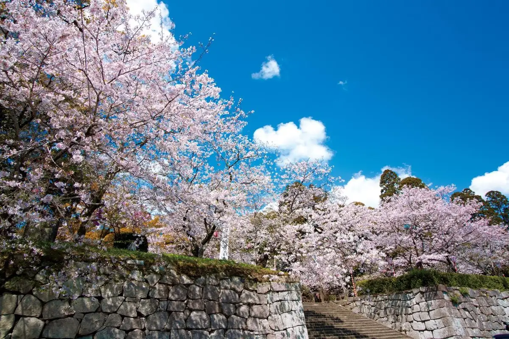
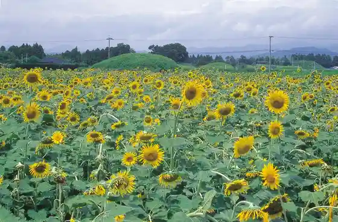
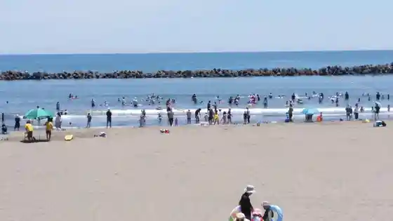
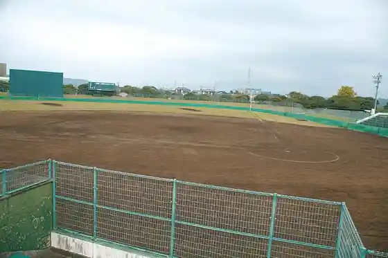
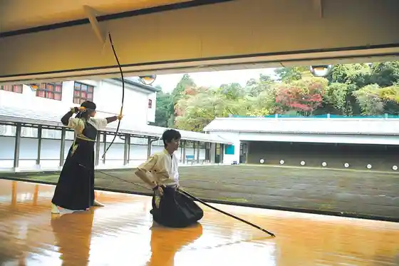

Japan / Miyazaki / Takanabe
Takanabe, Miyazaki
Takanabe · Miyazaki
Takanabe
Highlighted on the Miyazaki map.

Sights
Maizuru Park
Takanabe, Miyazaki · 0983-22-5588 · Official / source link
Mochida Kofun Gun Takanabe Taishi
Takanabe, Miyazaki · 0983-22-5588 · Official / source link

Takanabe Beach (Ka Kuchi Hama)
Takanabe, Miyazaki · 0983-22-5588 · Official / source link

MASUDA Sutajiamu Takanabe Sogo Sports Park Yakyujo
Takanabe, Miyazaki · 0983-23-3701 · Official / source link

Inoe Shoten Supotsu Center Takanabe Gym Kyudo Ba
Takanabe, Miyazaki · 0983-23-3701 · Official / source link

Okunai Tamokuteki Plaza (Komaru Kahan Sports Park)
Takanabe, Miyazaki · 0983-23-3701 · Official / source link
Takanabe Marsh
Takanabe, Miyazaki · 0983-23-3326 · Official / source link
Komaru Kahan Sports Park (Yakyujo)
Takanabe, Miyazaki · 0983-23-3701 · Official / source link
Ka Kuchi Hama
Takanabe, Miyazaki · 0983-22-5588 · Official / source link
Jazu Kissa Daumbiito
Takanabe, Miyazaki · 080-3965-5824 · Official / source link
Takanabe Supotsu Center
Takanabe, Miyazaki · 0983-23-3701 · Official / source link